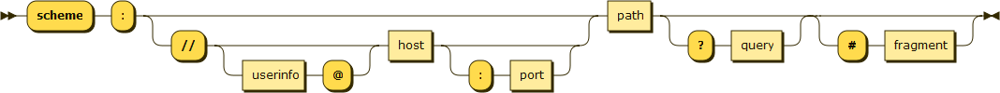
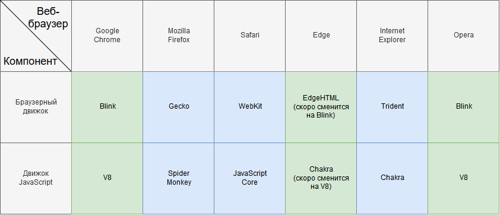
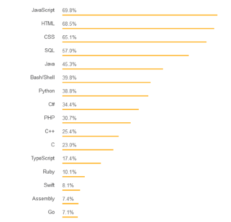

Веб программирование. Фронтенд
Пару слов обо всём
Содержание лекции
Веб программирование
Веб программирование - это программирование клиент-серверных систем, работающих по протоколу HTTP(S) (главным образом).
Всемирная паутина (World Wide Web) построена на протоколе HTTP. Общение браузера с веб-серверами осуществляется именно по этому протоколу.
HTTP
HTTP (Hypertext Transfer Protocol) - stateless протокол прикладного уровня для взаимодействия клиент-серверных систем по принципу "запрос-ответ".
"Протокол" (коммуникационный протокол/протокол связи) - означает набор правил для передачи информации между двумя объектами.
Протокол описывает формат используемых сообщений и алгоритмы, по которым эти сообщения должны передаваться.
Клиент-серверная архитектура
HTTP - клиент-серверный протокол. Это значит, что при общении по HTTP всегда должно быть 2 стороны: Клиент и Сервер.
Сервер - это не физическая машина в каком-нибудь удалённом дата-центре. Сервер, как и клиент, - это программы, написанные специальным образом, чтобы работать по HTTP.
Как правило, программа-сервер запущена на другом компьютере, нежели клиентское приложение, и, для упрощения, сервером называют сам удалённый компьютер.
Сервер/клиент - это функциональность.
Принцип "запрос-ответ"
HTTP работает строго по принципу "запрос-ответ".
Одна сторона отправляет запрос (Request) на какой-то конкретный ресурс. И эта сторона тогда выступает в роли Клиента.
Другая сторона ожидает запрос, и при его получении отправляет ответ (Response), тому кто прислал запрос. Эта сторона называется Сервером.
URL
Ресурсы идентифицируются по URL (Uniform Resource Locator) - уникальному адресу веб ресурса.
Это то, что мы видим а адресной строке браузера.
URL не повторяются, и состоят из следующих элементов:

- http://localhost:4000/lecture/1_scripting/index.html#/2/3
- https://marketplace.visualstudio.com/items?itemName=npm
- https://www.internetworldstats.com/
Порты по умолчанию
HTTP по умолчанию работает через порт 80 (это значит, что сервер на своем компьютере подключен к 80 порту и слушает его, а клиент отправляет запросы на этот порт серверной машины).
HTTPS по умолчанию работает через порт 443.
Если в URL адресе опускается секция порта, это значит, что запрос будет идти на порт по умолчанию для используемого протокола.
Таблица стандартных портов:
Статья в википедииHTTPS
Протокол HTTPS - это тот же HTTP, только с шифрованием передаваемых данных по протоколу шифрования TLS (ранее SSL).
В настоящее время использование простого HTTP считается устаревшим и небезопасным.
Stateless
HTTP - stateless протокол. Statless - значит "без состояния".
Это означает, что любой HTTP запрос изолирован и независим от предыдущих запросов.
На один и тот же запрос всегда должен возвращаться один и тот же ответ. Запрос не содержит какого-либо меняющегося состояния системы.
Но в современном вебе любому динамическому персонализированному веб приложению требуется обрабатывать состояние системы и изменять его, поэтому было придумано много сложных и хитроумных решений для обхода этого ограничения.
Схема запросов
Схема ресурсов
История веба
В 1990-х годах появился и начал стремительным темпом развиваться веб.
Веб-страницы изначально были статическими форматированными текстовыми документами, просто находящимися в открытом доступе в сети.
Вот первый в мире веб-сайт:
http://info.cern.chТаким веб видели его создатели: просто текст с гиперссылками.
И именно под такой контент был заточен протокол HTTP и спроектирована вся инфраструктура всемирной паутины. Собственно от этого и все современные проблемы веба.
Начало
Через некоторое время после возникновения и распространения веба, возникла идея придать веб-страницам динамики и интерактивности - дать возможность пользователю как-либо взаимодействовать с документом.
И тогда, в 1995 году, разработанный за 10 дней, появился JavaScript.
У JS была тяжелая история. В то время, никто и не предполагал, насколько разовьётся и станет распространённым веб. Изначально, JS был разработан только для того, чтобы обеспечивать возможность обработки пользовательского взаимодействия (нажатие на кнопочки) и написания простейших алгоритмов.
Тяжелое детство
Когда произошел взрыв популярности и веб технологии стали распространяться с бешенной скоростью, первоначальный JavaScript был не готов к этому, и его пришлось кардинально менять. За последние 10 лет JavaScript превратился в совершенно другой язык программирования.
Но из соображений обратной совместимости JS был не переделан заново, а дополнен новой функциональностью. В итоге получилось так, что сейчас в языке содержится огромное количество устаревших конструкций, неиспользующихся элементов, костылей и просто странных вещей.
ECMA Script
Вообще, мы будем изучать браузерный JavaScript. Тот JS, средой выполнения которого является браузер.
Но, в принципе, JavaScript может быть и другим. Например, NodeJS - самая распространйнная серверная версия JS.
Сам по себе, JavaScript - это просто язык, т.е. предопределённый набор команд (синтаксис). А где он будет выполняться, это уже другой вопрос, - зависит от реализации.
Синтаксис языка JavaScript задаётся спецификацией ECMA Script.
Скрипты
Браузерный JS - это скриптовый язык.
Программы, написанные на JS, называются скрипты.
Скрипт - вспомогательная программа для другой программы. Скрип не выполняется самостоятельно, он привязан к какому-то другому процессу и вызывается по потребности.
В отличие от обычных программ, скрипт не работает всё время. Он вызывается в определённый момент, выполняется и завершается. То, что работает всё время - это другой процесс, родительский для скрипта. В случае с JS - это вкладка браузера.
Среда выполнения
Если обычные программы выполняются в операционной системе (или на виртуальной машине), то JS выполняется в браузере.
Браузер, по своей сути, является многофункциональным HTTP клиентом.
Браузеры
В настоящее время, веб-браузеры - одни из самых сложных программных систем в мире.
Например, исходный код Chromium составляет около 25 млн строк кода.
Архитектура браузеров
Все браузеры имеют схожую архитектуру и состоят из 3 программных компонентов:
- Графический интерфейс
- Браузерный движок
- Движок JavaScript
Браузерный движок отвечает за рендеринг и отображение веб-страниц.
Движок JavaScript - это интерпретатор (т.е. компилятор), который выполняет JS код.
Виды браузеров
Гугл захватывает мир

Многообразие браузеров
Каждый браузерный движок отображает HTML и CSS по своему.
И каждый движок JavaScript выполняет JS по своему.
Конечно, все браузерные движки должны соответствовать спецификациям HTML5, CSS3, и многим другим общепринятым соглашениям.
В случае с JS, его движки должны соответствовать спецификации ECMA Script.
Многообразие проблем
Но на практике, это не всегда бывает так, как должно.
В одном движке спецификация может не соблюдаться, в другом движке быть какой-нибудь баг.
Помимо спецификации, в каждом движке содержится свой собственный уникальный набор функциональности и API, расширяющий возможности спецификаций.
Так, какое-то действие в одном браузере может совершаться по-своему, во втором по спецификации, а в третьем вообще не поддерживаться.
И это касается не только JS с JavaScript движками, но и HTML и CSS с браузерными движками.
Конечно, всё это редкие случаи, касающиеся каких-либо продвинутых возможностей. Базовые вещи работают везде одинаково.
Версии браузеров
И это мы ещё не учитывали версии браузеров. Ежемесячно, а то и чаще, для браузеров выходят обновления и появляются новые версии с дополнительной функциональностью движков.
Это значит, что какая-то функциональность будет работать в новых версиях браузеров, а в более старых работать не будет, или будет, но некорректно.
А не все пользователи своевременно обновляют браузеры, ой как не все.
Поддержка
И поддержка более старых версий браузеров для своего приложения может стать настоящим кошмаром.
Даже поддержка нескольких браузеров может привести к серьёзным трудностям ( Internet Explorer - вообще отдельная история)
А поддержка старых версий нескольких браузеров может вообще привести к необходимости полной переработки кода и использованию целого вагона костылей.
Информацию о том, что и где поддерживается, нужно смотреть на сайте https://caniuse.com/
Поддержка
Какие браузеры и версии поддерживать зависит в общем от строгости требований и целевой аудитории.
Любой неподдерживаемый браузер уменьшает количество потенциальных пользователей, поэтому чем шире поддержка, тем лучше.
Если ваш сайт корректо работает в IE7 или ниже, можете идти за медалью.Спасение
На самом деле, такие трудности с поддержкой старых версий браузеров, в большинстве случаев, уже остались в истории. Потому что сейчас есть Babel.
Суть
В общем, никто не ожидал от веба многого. JS задумывался как простенький язык для обработки маленьких скриптов.
А оно вон как сложилось.
Темп развития
Все проблемы веб приложений связаны именно с незапланированным стремительным ростом.
Сейчас всё идёт в веб. Большинство современных программных разработок в первую очередь направлены на веб. Веб-сайты компаний появляются раньше, чем компании создаются. Все сервисы расположены в вебе, у любого проекта есть свой веб сайт. Да даже у каждого человека (почти) в ИТ есть свой веб сайт или несколько.
Поэтому за последний 10 лет JavaScript стал самым популярным языком программирования в мире.
Статистика Stack Overflow 2018
Популярность языков программирования по использованию среди опрошенных пользователей.
Статистика GitHub 2018

Популярность языков программирования среди репозиториев GitHub.
Статистика GitHub 2018

Разделение обязанностей
Изначально с вебом мог справиться и один программист, но в результате бурного развития и чудовищной скорости появления новых веб технологий, эта сфера разделилась на два больших направления:
- Frontend
- Backend
Frontend
Фронтенд разработка - это разработка клиентской браузерной стороны веб приложения.
Сюда относится вёрстка страниц с помощью HTML и CSS, и программирование на JS с использованием разнообразных библиотек.
Backend
Бэкенд разработка - это разработка серверной стороны веб приложения.
Разработка в бэкенде представляет собой написание чистой бизнес-логики, без каких-либо излишеств и графического интерфейса.
Использоваться, в принципе, могут любые технологии и языки программирования.
К бэкенду относится работа с веб серверами, взаимодействие с БД, разработка API и многое другое.
Типы веб сайтов
Веб сайты делятся на 2 категории:
Статические веб-сайты
Статический веб-сайт - сайт без бэкенда, сайт без какой-либо серверной логики. Весь контент в нём статический. На один и тот же запрос такой сайт всегда возвращает одинаковый ответ.
Такой сайт состоит только из HTML, CSS, JS и дополнительных ресурсов. На стороне сервера не выполняется никаких дополнительных действий. Сервер получил запрос на конкретный ресурс - сервер вернул этот конкретный ресурс в ответе.
В основном статические веб-сайты представляют собой информационные ресурсы или сайты-визитки.
Динамические веб-сайты
Ну, а динамические веб сайты - противоположная категория сайтов, - сайты, у которых есть бэкенд.
Главное предназначение бэкенда - обойти ограничение HTTP, его stateless натуру.
Т.е. разграничивать пользователей и менять состояние ресурсов на основании предыдущих запросов и действий.
Типы приложений
В вебе можно натолкнуться на понятия:
- Веб сайты
- Веб приложения
- Веб сервисы